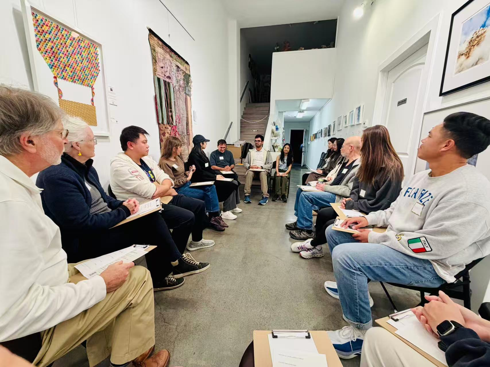
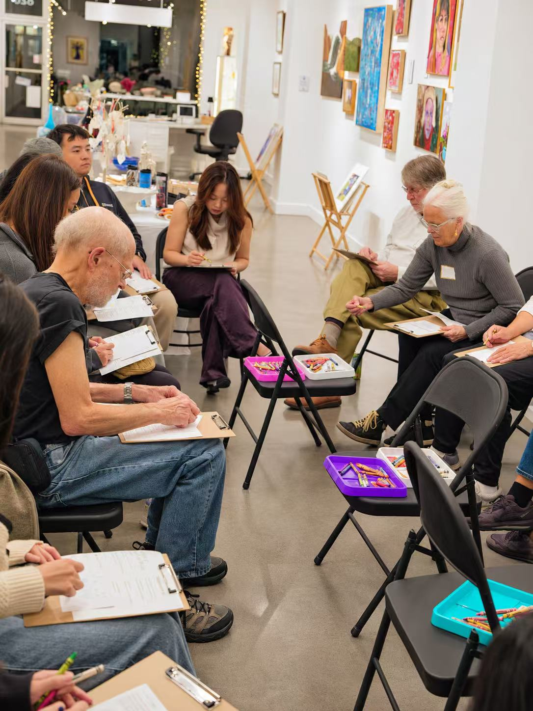

Gathering 07 · Participant Works
Creative Mini Retreat: Escape the Everyday
A moment of stillness. A spark of imagination. At AIC #7, guided breathwork and meditation made space for drawing, reflection, and AI image-making. These five works were shared by participants after creating together.
The Outputs
Five shared imaginations
From open skies to inner landscapes, five images from the evening. Select an image to view it in full.
breaking free
The Sky Was Always There
My Mind
The Starry Night
Releasing and Returning
Peaceful world
From the Evening
Breathe, imagine, and create together
An evening of guided breathwork, meditation, drawing, and sharing at Gallery House.

